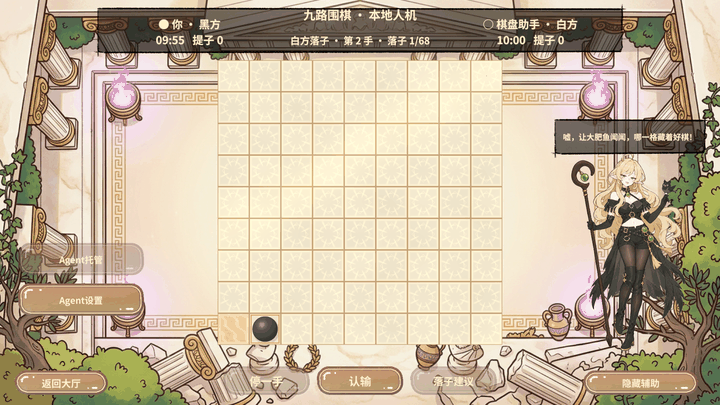
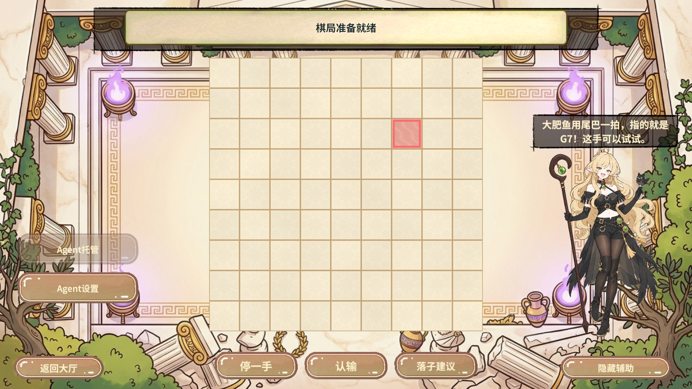
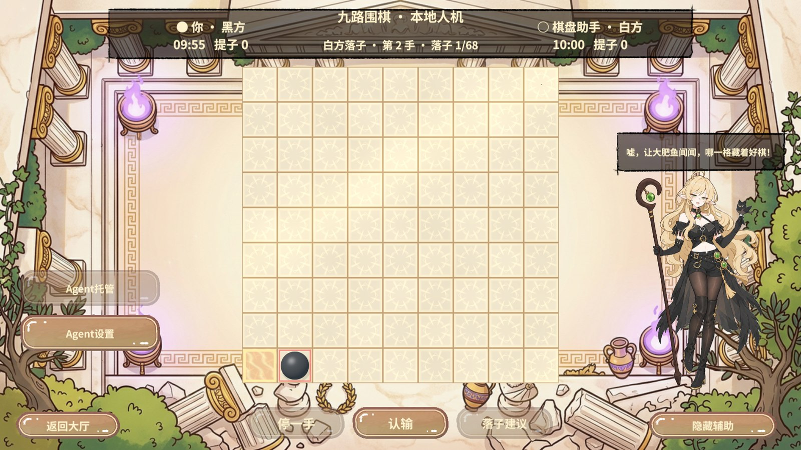
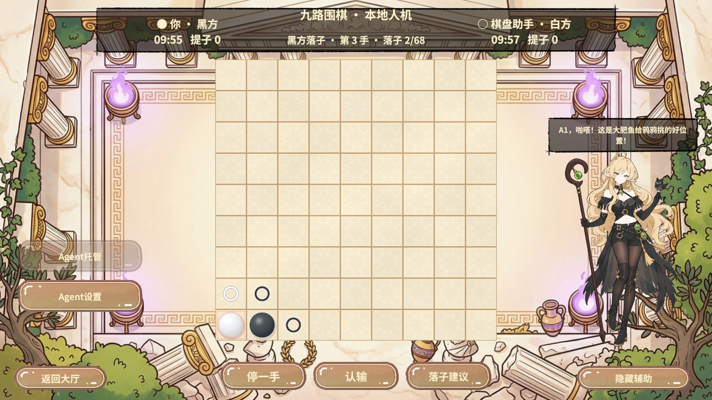
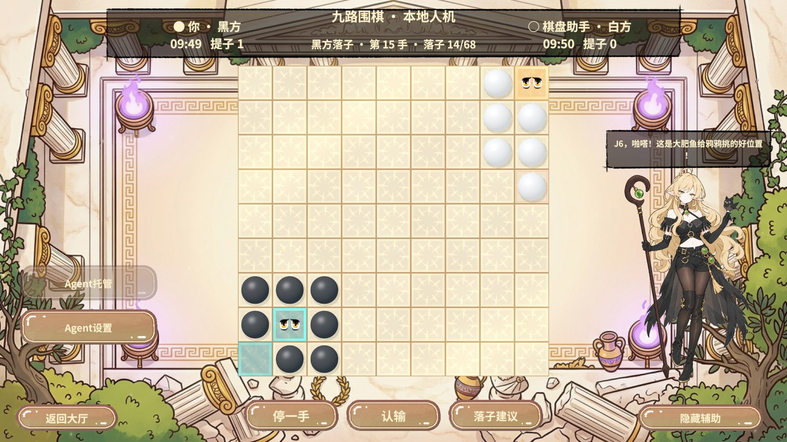
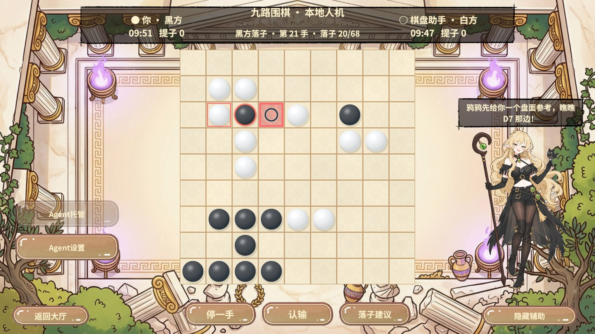
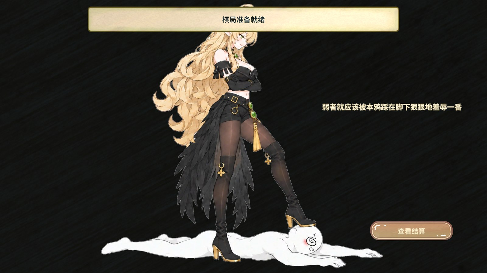

Unity 验收
| 计划 | 结果 |
|---|
| 固定人机棋谱、先亮后落、眨眼和败北演出 | 47 步和 5 步清理通过 |
| 实际本地搜索和误导建议 | 37 步和 4 步清理通过 |
| 最终全屏实底、立绘和台词 | 15 步和 4 步清理通过 |
三个计划都回到大厅、关闭 PvP 域，运行期错误为零。固定棋谱用可重复的 Agent 响应，另一个计划由真正的本地搜索走完 10 个白方回合。第三次建议出现 D7，棋谱保持 20 手，仍由玩家决定下在哪儿。
第 1 手黑棋落下后，白棋目标 A1 先高亮，当时只有一颗已下棋子。随后白棋入盘并提交为第 2 手。眼位观察到六章 EyeBlink 的全部四帧。自然数子确认白方胜出，分数动画结束后弹出全屏败北面板，点击可回到分项。

高亮和已落子的两个取证画面
棋力对照与落子上限
同一 GoCore、六个固定开局、双方换色，共十二局。新搜索对旧启发式策略 11 胜 1 负，其中执白 6 胜 0 负。新策略在每次决策中保持实盘指纹不变，共核对 396 次。棋力结论只覆盖该旧版基准。
十九路参考预算取 300，按 81/361 折算并向上取整为 68 子。这是本地速战配置。十二局都在第 68 子切入数子。小上限隔离断言覆盖停着不占预算、到限拒绝继续、指纹与快照一致、双方确认后结束。传统规则的常见结束条件是双方连续停着。英国围棋协会规则说明
| 局 | 新搜索执棋 | 胜方 | 黑方净胜目 | 实际落子 |
|---|
| 1 | Black | Black | 1.5 | 68 |
| 2 | White | White | -43.5 | 68 |
| 3 | Black | Black | 13.5 | 68 |
| 4 | White | White | -46.5 | 68 |
| 5 | Black | Black | 16.5 | 68 |
| 6 | White | White | -55.5 | 68 |
| 7 | Black | Black | 6.5 | 68 |
| 8 | White | White | -23.5 | 68 |
| 9 | Black | Black | 0.5 | 68 |
| 10 | White | White | -43.5 | 68 |
| 11 | Black | White | -4.5 | 68 |
| 12 | White | White | -53.5 | 68 |
真实对局画面

红色建议格
白棋落子前高亮
白棋落下
围棋六章眨眼帧
第三次建议的可反制落点
本地人机败北全屏面板框架与工具
RevUI 管理全屏面板和点击，RevPool 租用原棋盘，RevDataTableManager 加载限额和误导频率，RevResManager 配合原有图集服务提供四帧眨眼和败北立绘。落子预告与动画使用同一张棋盘的材质参数，提交仍走正式规则入口。
RevCLI 导表并构建 Editor 使用的 PC AB。RevMCP 在 Play 后依次调用 rev_discover(target=game, query=pvp.)、rev_call(game, pvp.state)、rev_call(gm, RevGame/流程状态) 和 rev_run，以状态、棋谱和画面分别验收。资源构建过程中恢复了 Unity 的目标程序集缓存，并重新导入缺少像素数据的两张图集。最终包内实测棋盘图集 15 项、败北图集 1 项，Shader 绑定四张眨眼 Sprite。